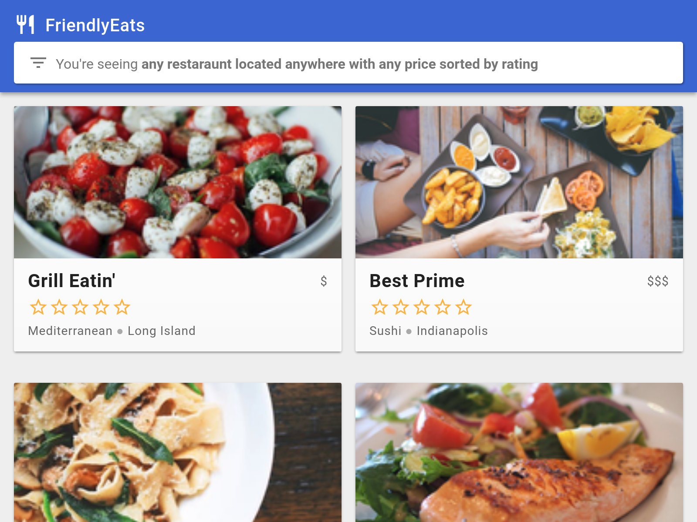
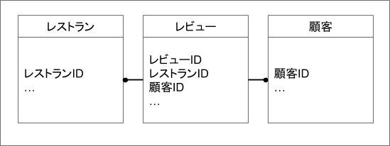
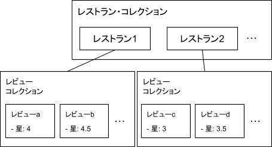

ここでは、Cloud Firestoreの概要を学び、レストランにレビューを追加するアプリを開発するハンズオンを行います。

ハンズオンを始める前に下記のものをインストールしておくこと
NoSQLデータベースの説明からFirestoreの説明までしてくれる12コマの動画シリーズをベースにFirestoreについて説明します。各動画の解説は動画の内容にそったものになっていますが、独自の説明方法を採用している点ご了承ください。
本動画シリーズは、GoogleのTodd Kerpelman氏による「Get to know Cloud Firestore」というFirestoreを使い始めるにあたって知っておくべきことを12回にわたって解説しているものです。動画は画面にiframeで添付されていますが、全画面表示にして参照するとよいです。また字幕を自動表示しますが、英語が苦手な人はYoutube画面の右下の字幕をONにして、さらに設定から字幕の自動翻訳を選び、日本語を選択して日本語字幕を表示して動画を参照するとよいでしょう。
従来型のリレーショナルデータベースでは、テーブルのスキーマが厳格に決められており、正規化という手法でデータの重複が発生しないようテーブル分割します。分割されたテーブルが互いに関係を持つ場合、一方のプライマリキーを他方が外部キーとして持つことで1対多の関係を構成します。例えば「レストラン」と「顧客」と「顧客によるレストランのレビュー(以下、レビュー)」の3つテーブルがあるとして、「レビュー」は「レストラン」と「顧客」を外部キーとして持つことで、「レビュー」テーブルが「レストラン」と「顧客」の間の中間テーブルとして機能します。

一方、NoSQL型データベースは様々なタイプがあるものの、主に「スキーマレス」という特徴を持ち、テーブル定義のような厳格なスキーマをあらかじめ要求しません。NoSQL型データベースでもリレーショナルデータベースのときと同じようにテーブル間のリレーションは重要概念で、上図のようなテーブル間の関係を設計してからアプリケーションのモデル部分を開発する必要がありますが、「スキーマレス」の特徴のため、アプリケーションのリリース後にテーブルに新たなフィールドを追加したくなった場合はアプリのモデル部分に追加するだけでよく、リレーショナルデータベースの時代のようにデータの移行を考慮しながらデータベースに対してスキーマ定義を更新するといった作業が必要なくなります。
また、NoSQL型データベースにはSQL文がありません。例えばコレクションとドキュメントのツリー構造からなるドキュメント型データベースでは、ドキュメントの階層をたどって検索を行うことで目的のドキュメントにたどりつきます。そのため、一つの検索で目的の情報にたどり着くためにわざわざ複数の階層のドキュメントを参照することを避けるため、リレーショナルデータベースでは正規化して別のテーブルに分離したフィールドを、NoSQL型データベースではあえて親子のドキュメント間で重複して持つといった非正規化を行うことが場合によっては推奨されます。例えば、レストランのレビューをリスト表示する場合で考えると、レビューにそれを行った顧客の名前をのせておくと、アプリは顧客までたどることなくレビューだけを検索するだけですみます。
ただしデータの重複保存は表示の際の検索回数を削減できますが、データの一貫性担保に注意が必要です。重複しているフィールドの更新や削除の際、重複して保存された箇所すべての更新や削除を行うことを忘れないようにしてください。これらデータの重複保存の設計は、参照の頻度と更新や削除の頻度のトレードオフを考慮して行います。
以上のとおり、リレーショナルデータベースとNoSQL型データベースにはそれぞれ利点と欠点がありますが、NoSQL型データベースの大きな利点として水平スケーリングが可能ということが挙げられます。この特徴により、アプリが人気になって、データアクセス数やデータ量が大きく増加した場合、NoSQLだとサーバを増強するだけで対応でき、自動スケールが可能になり、運用保守の人件費やシステムの停止リスクが削減できます。いままでデータベースにおいてもっとも大切と言われてきたデータの一貫性担保を一部犠牲にしたとしても、最近NoSQLが流行ってきている理由には、クラウド時代におけるスケーラビリティの必要性が挙げられるわけです。
Cloud Firestoreでは、NoSQL型データベースの中でもドキュメント型データベースを採用しています。ドキュメント型データベースでは、コレクションとドキュメントのツリー構造で構成され、JSONの配列とオブジェクトで表現することができます。これらコレクションとドキュメントの説明は、Firebaseのデータモデルを参照してください。
データベースに検索を行ってデータを取得する操作のことをクエリと呼びます。一般的なドキュメント型データベースでは、一回のクエリの検索対象となるデータの範囲は、検索対象ドキュメントが所属するコレクション内のみになります。以前に説明したコレクションとドキュメントの関係を思い出してもらいたいのですが、コレクションはドキュメントを含みますが、ドキュメントに直接ドキュメントを紐づけることはできず、必ずコレクションを挟みます。例えばレストランのレビューのケースのレストランとレビューの関係は下図のようになります。

ここで注目してもらいたいのが各レビュー・コレクションはそれぞれのレストラン・ドキュメントに紐づいているので、すべてのレビューを対象に例えば星4以上など星の数を指定して一括検索することができません。この理由としては、NoSQLデータベースの特徴と言えますが、上のようなツリー構造のため、ドキュメントのインデックスはドキュメントを含むコレクション単位ではられるためと言えます。そのため、同じレビューだからといって隣のコレクションも含めて検索しようとしてもそれは対象外となるわけです。これはSQLではできたことで、レビュー・テーブルを正規化して一つに集めていたため、これらをまとめてインデックス化を行うことができたわけです。
そこで、Firestoreではコレクショングループという機能を用意しています。サブコレクション（上図のレビュー・コレクションに相当）において検索キーとして機能させたいフィールド（上図ではレビュー・コレクションの星の数フィールド）を指定することでこれが可能になります。ただし、Firestoreでは、このコレクショングループが指定できるフィールド数は200個までという制限があることに注意してください。また、Firestoreデータベースツリー内に同じ名前のコレクションが複数あると、それら全てを含めてインデックス化してしまうことに注意が必要です。そのため、一つのFirestoreデータベースで利用するコレクション名は重複しないよう設計しましょう。
Firestoreはドキュメント内のすべてのフィールドが（マップ内のフィールドも含めて）自動的にインデックス化されるので、値の全文一致や上方一致、数値の大小で検索することは非常に高速で行えます。一方、SQL文の"LIKE %(値)%"のような部分一致を行う機能を持っていないので、下記のリンクで行っているような工夫が必要です。
https://qiita.com/oukayuka/items/d3cee72501a55e8be44a
またFirestoreの別の制限として"!="が含まれるクエリや論理ORのクエリを行うことができません。例えば、星の数が満点5だけど書き込み数が少ないとあやしいので、それらを除外する検索条件として「星の数が4以上5より少ない、もしくは、星の数が5でレビュー数が3以上のレビュー」を検索したいとしてもFirestoreではそれができず、「星の数4以上5より小さいレビュー」と「星の数5でレビュー数が3以上」を検索して、クライアント側でマージして、もし重複分があればそれを差し引きしなければなりません。もしくはこの検索条件を見越して新しいフィールド「満点疑惑」といったものを追加して、レビュー書き込み時に星の数5でレビュー数2以下の場合falseに設定し、検索時には星の数が4以上かつ「満点疑惑」がtrueを検索するよう実装する、といった工夫が必要です。
さらにFirestoreのクエリで注意が必要なケースとして「複合クエリ」が挙げられます。複合クエリとはwhere文を複数つないでAND検索を行うことをあらわしますが、このとき複数種類のフィールドで範囲比較（"<", "<=", ">", ">="）またはarray-contains句を適用する場合は、それら複数フィールドの組み合わせでインデックスを作成しておく（これを複数インデックスと呼ぶ）必要があります。あらかじめオブジェクトのすべてのフィールドの組み合わせで複合インデックスを作っておくという案も考えられるが、これらの組み合わせは莫大な量になりうるため、検索の要件にあわせて複合インデックスを行うことにします。
Firestoreの便利な機能としては、もしこの複合インデックスの設定をおこたった状態でクライアントから複合クエリを実行した際、エラーメッセージがFirestore上の複合インデックス作成画面へのURIを返してくれるので、そのリンクをたどって設定を行うことができます。
また、範囲比較またはarray-contains句で行う複合クエリの対象フィールドが3種類以上の場合も、これらをまとめて複合インデックスの設定を行います。
以上を踏まえた上で、Firestoreのクエリについてさらに確認したい場合は、下記のオフィシャルドキュメントを参照してください。
https://firebase.google.com/docs/firestore/query-data/queries
Firestoreでは、ドキュメントの読み込み数(10万回あたり0.06ドル)、ドキュメントの書き込み数(10万回あたり0.18ドル)、ドキュメントの削除数(10万回あたり0.02ドル)といったドキュメントの処理数単位で課金がなされます。Firestoreではインデックスを元に操作が行われ、条件にあったドキュメントの読み書き削除の際、インデックスを使って対象のドキュメントに一発でたどり着ける（逆にいうとこれしかできない）ため、このような回数による課金が可能になっているものと思われます。
このような課金システムの場合、リスト画面の更新を行う際、リクエストレスポンス型のアクセスを行うと、データベース上のデータ更新部分が一部であったとして、更新されてないものも含め表示対象の全データをまとめて読み込むことになるのでコスト的に大変効率が悪くなります。このあとペジネーションのところで説明しますが、Firestoreでは、データアクセスをリアルタイムデータベースとのストリームとして扱い、クライアント側のキャッシュを有効利用して更新が発生したデータのみをやりとりします。これによって差分の読み書き分だけが課金され、全データ取得型より大幅にコストを削減することができます。
さらに、Google Cloud ConsoleのApp Engine画面にて、Firestoreの利用量と時間ごとの課金料金を確認することができます。また、利用料金の閾値を設けてそれを超えたらアラートメールを送ってくれるような設定を行うこともできますのでうまく運用保守で利用するとよいでしょう。
Firestoreでは、JSONの構造における配列（[]で表す）とマップ（{}で表す）をドキュメント型リアルタイム・データベースとしてうまく操作できるようコレクション（JSON内の配列に相当）とドキュメント（JSON内のマップに相当）にうまく分離して保存管理するよう設計します。この設計をうまく行うためにはFirestoreにおけるいくつかのルールを理解しておく必要があります。
ルール1: ドキュメントには制限がある
ルール2: 検索結果はドキュメント全体が出力される
アプリ表示のときタイトルだけ欲しいケースがありますが、ドキュメント内の一部のフィールドだけを取得することはできず全フィールドデータが送られてきます。これを回避したければドキュメントを分割する必要があります。同じことはセキュリティルールにも言え、ドキュメント内の一部のフィールドだけ異なるアクセス権を付与するといった操作はできません。異なるセキュリティルールを設定したい場合、たとえドキュメント内で配列構造を持たない箇所でもコレクション配下の1ドキュメントとして分割して対応します。
ルール3: 検索対象は浅い
ルール4: 課金はドキュメントの読み書き回数でカウントされる
ルール5: 配列操作は奇妙である
参考）https://firebase.googleblog.com/2014/04/best-practices-arrays-in-firebase.html
ドキュメント型データベースにおいて、ユースケースに適したデータ構造を設計するとき主に以下の3種類の構造から適切なものを選ぶと良いでしょう。
例えば、レストラン・ドキュメントに最も星の数が多い5つのレビュー内容や最新の5つのレビュー内容をマップか配列として含めるといったケースに用いられます。
この利点としては、ドキュメントの一度の検索で表示すべき情報を取得することができることが挙げられます。
一方、制約事項としては、データが時間経過とともに拡大する場合はリストが大きくなると、更新時のインデックス化に時間がかかったり、1ドキュメントあたり1MBや2万フィールド数の制限に到達してしまうリスクがあります。
例えば、レストランのレビューは、レストランに関する称賛や批評であるわけで、大量の書き込みが行われる可能性もあることからレストラン・ドキュメントのサブコレクションに含めるとよいでしょう。
この利点としては、リストが大きくなっても親ドキュメントのサイズが変わらず、サブコレクションに対してもすべてのクエリ機能を使用でき、複数のサブコレクションにまたがるコレクション グループ クエリを発行できます。
一方、制限事項としては、ドキュメントをまたがって検索することが常である場合にも読み込み回数がドキュメント数分発生してしまうことが挙げられます。
例えば、レビューを書き込む顧客はこのアプリケーションのユーザであり、例えばアプリに出前機能が追加された際にも再利用する必要があるかもしれないため、ルートレベルのコレクションとして整理するとよいでしょう。
この利点としては、ルートレベルのコレクションはリレーショナルデータベースにおける正規化の考え方と同じく再利用しやすい多対多の関係に適しており、アプリの作り方によらずデータの一貫性が保たれ、安心できます。
一方、制限事項としては、データが階層的になっていることから、データベースが拡大するにつれ、データの取得が難しくなる可能性があります。例えば、20才未満の顧客が4以上の星をつけたレストランを検索する、といった操作は難しいため、必要となりそうな検索条件にあわせてレビュー・ドキュメントにも重複して顧客情報を持つよう設計するとよいでしょう。
データ構造については、下記のオフィシャル・ドキュメントも参照するとよいでしょう。
https://cloud.google.com/firestore/docs/concepts/structure-data?hl=ja
Firestoreでは、データベースのツリー構造のドキュメント位置を指定して誰がCRUD（Create:作成、Read:読み込み、Update:更新、Delete:削除）できるかを指定することができます。これらのアクセス権の指定はセキュリティルールといい、拡張子".rules"のファイルに設計してFirestoreにデプロイして適用します。
データベース内で、フィールドレベルのアクセス権をIF文を使った複雑な条件文と共に直感的にルール化できるのは、リレーショナルデータベースにはない機能です。APIの開発をしなくてもクライアントから共通化されたSDKを使ってリアルタイムデータベースとしてアクセスできる、といったことを含めて、Firestoreはモバイル開発に最適なデータベースのひとつであると言えるでしょう。
このセキュリティルールでは、データベースのルートからのドキュメントへのパスを指定し、ドキュメントは{xxID}や{xxID=**}のようにID名（自由に命名できます）とワイルドカードを使って指定します。ここで{}内で指定した変数名(xxID)はドキュメントをあらわし、そのドキュメントに含まれるフィールドをキーにしてIF文の中でアクセス条件を指定することができます。またルールの中では「get(ドキュメントへのパス)」を指定して、指定したドキュメントのフィールド値にもアクセスできます（例えばログインユーザのロールなど）。
これらのルールは複雑で再利用したくなる場合がありますが、カスタムファンクションといういわゆる関数を定義して、例えばGoogleアカウントかどうかをチェックするといった処理を関数化してルールファイル内で再利用することができます。
セキュリティルールはアクセス権の設定が主な目的ですが、このしくみを使うと書き込みや更新時に空白を受け付けないフィールドを指定したり、メールアドレスの形式のチェック、さらには1顧客が書き込みできるレビューの数を100件までに制限するといったデータバリデータとして利用することも可能です。そのため、プロジェクトごとにどこまでセキュリティルールに設定を行うかをあらかじめ決めておくとよいでしょう。
ルールファイルはアプリ内で想定通り動作することを担保するために単体テストを自動化するよいでしょう。その場合、Firebaseエミュレータを使ってテストすることをおすすめします。そうすれば、自動テストのために課金が発生するといったことを避けられます。
セキュリティルールについては、下記のオフィシャル・ドキュメントも参照するとよいでしょう。
https://cloud.google.com/firestore/docs/security/get-started?hl=ja
一般的に、アプリケーションが表示に必要なレコード以上のデータを取得すると無駄な読み込みに課金が発生しますり、ネットワークを流れるデータ量も増えるため、サーバ側でペジネーションを行うことが推奨されます。Firestoreではストリーミング・データベースとして機能し、高度なペジネーション機能を提供します。というのも、クライアントとストリーミングとしてコネクションを維持している場合、常にクライアント側のキャッシュとの差分をチェックして更新分だけをやりとりしてくれる機能を持っています。また、リストを表示する画面があったとして、画面に表示されていない表の下部や上部をスクロールして表示したいとき、リアルタイムデータベースは画面の移動にあわせて必要なデータをストリーム取得してくれます。具体的には「Query.start(after:previousDoc)」といった関数がいま表示されているドキュメントの続きををよしなに判断して取得してくれます。このようにFirestoreのSDKを使うことで、他のクライアントがコレクションに新たなドキュメントを追加したり、既存のドキュメントを削除したりする場合にも、アプリケーションが表示している画面に集中してリストの更新を行ってくれるため、開発者は難しいことを考えることなくリアルタイムデータベースの効率的で高度な機能を実現するアプリの開発を行うことができます。
例えば、Flutterでは、「Firestore.instance.collection('コレクション名').snapshots()」といった関数でストリーム型でデータを取得し、ListViewで表示させることでペジネーションの実装が可能です。
Firestoreでももちろんトランザクション機能を提供しています。例えば、顧客ドキュメントの名前フィールドを更新する際、レビュードキュメント上においたレビューを追加した顧客名も同時に更新しなければならないことがあります。このような場合、一連の更新作業はひとつのトランザクションとし、すべてが成功した場合にのみ更新を確定（コミット）するといった機能が必要です。そうでなければ、途中の更新に失敗した場合データに不整合が発生してしまいます。
Firestoreにおけるトランザクションの考え方は下記の通りです。
また、具体的な機能として、ドキュメントに数値フィールドを持ち、その増加と減少にトランザクション処理を施したい場合、FieldValue.increment()を使うと簡単にトランザクションを担保できます。
参考）
Firestoreはオフラインをサポートしており、クライアント側にFirestore SDKを使うと、オフライン時の読み込みはキャッシュが使われ、書き込みもローカルに保存されオンラインになったら順番にFirestoreに反映されるといったことが可能です。これらの機能は大変高度なものであり、実装するには大変な工数がかかり考慮点も多数あるように思えますが、Firestoreではデフォルトでこれらの機能が有効であり、Firestore SDKを使えば簡単に実装することが可能です。
リアルタイムデータベースの操作について下記の迷信がありますが、Firestoreはこれらの迷信を覆します。そのため、Firestoreでは、デフォルトでリアルタイム機能を使うよう設計し開発をすすめることをおすすめします。
いいえ、Firestore用SDKがストリーム処理をしてくれるのでお作法を覚えれば実装は簡単です。
いいえ、更新された分だけが読み込み数にカウントされ、むしろ全部を読み込む方式の方が課金されることになります。リアルタイム処理の方が一般的に課金がすくなくなります。
いいえ、リスナーを常駐させることは電力消費を増やしません。
Firesoteは、Firebase上のドキュメント型リアルタイムデータベースを提供するサービスであり、リレーショナルデータベースをモバイルアプリから利用する際に通常必要となるAPIの開発を必要としません。しかし、異なるドキュメントに重複して所有されるフィールドの更新時に一貫性を持たせるための更新処理を実行したい場合や古いデータをまとめて削除するといった運用バッチを実行したい場合など、バックエンドでまとめて処理を行いたいといった要望があります。Firebaseでは、そのような場合に利用できる機能としてFirebase Functionsというサービスを提供しています。また、Firebase Functionsは一過性のバッチ処理を実行するものであるため、コンピュータ上にプロセスが常駐しないサーバレス型で実装されています。そのため、使った分だけの課金であるのはもちろん、プロセスの常駐に必要なCPUやメモリ、ストレージへの課金がまるまる削減されます。
Firebase Functionsでサポートされるプログラミング言語はJavaScriptとTypeScriptですが、バグを防ぐためにも型の定義がしっかりしているTypeScriptの利用がおすすめでJavaScriptに似た言語のため言語の習得も容易です。
Firebase Functionsは想定通り動作することを担保するために結合テストを自動化するよいでしょう。その場合、Firebaseエミュレータを使ってFirestoreのエミュレータとつなげてテストすることをおすすめします。そうすれば、自動テストのために課金が発生するといったことを避けられます。
Firebase Functionsの詳細については、下記の動画「TypeScriptを使ってCloud Functionsを始めよう」も参照するとよいでしょう。
https://www.youtube.com/watch?v=DYfP-UIKxH0
Cloud Functionsをどのような場合に利用すればよいか、5つのパターンにまとめると以下の通りです。
あああ。
あああ。
あああ
あああ
あああ
あああ。
あああ
あああ
あああ
あああ。
あああ
あああ
あああ
あああ
あああ
あああ
あああ
あああ
あああ